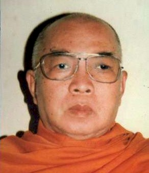

BuddhaSasana
Home Page
This document is written in Vietnamese, with Unicode
Times font
Tỳ kheo Thiện Minh
|
 Hòa thượng Siêu Việt, pháp danh Ulàro Mahàthera. Ngài có thế danh là Trần Siêu Việt, sinh năm Giáp Tuất (1934) tại quận Trà Bek, tỉnh Prey Veng, nước Cao Miên. Thân phụ là cụ Trần Văn Lũy; thân mẫu là cụ Dương Thị Hoa. Ngài là con trưởng trong gia đình có 6 anh chị em. Ngài xuất thân từ một gia đình nông dân nhân hậu, có truyền thống đạo Phật lâu đời và lớn lên tại đất nước chùa tháp - một đất nước chọn Phật giáo làm quốc giáo. Sống trong một gia đình đạo đức, cộng thêm môi trường xã hội kính tín Tam Bảo, là nguồn vốn tinh thần quý giá cho Ngài bước đến ngưỡng cửa Từ bi. Năm 13 tuổi (1947), theo truyền thống gia tộc và tập tục đất nước Cao Miên, Ngài vâng lệnh song thân vào chùa Preypasarì làm giới tử Sa di để rèn luyện kỷ cương đạo đức làm người, ngõ hầu phục vụ gia đình, xã hội mai sau. Thế nhưng, như có túc duyên sâu dày đối với Phật pháp, Ngài quyết chí chọn đời sống xuất gia theo con đường giải thoát của đức Bổn sư. Hơn 6 năm tinh tấn tu học, phụng sự Phật sự tại chùa Preypasarì, Ngài thông suốt được Pàlì ngữ và Kinh Tạng Pàli, trở thành một vị Sa di có học hạnh khiêm cung được thầy yêu, bạn quý. Năm 20 tuổi (1954) do tinh tấn tu học, giới hạnh trang nghiêm, nên Ngài được đăng đàn thọ Cụ túc giới nơi Hòa thượng Tế độ Pavaraveti, và hai vị Thầy Yết ma là Tỳ kheo Dhammathera và Indathera, cùng với 21 vị Tỳ kheo chứng minh tại chùa Sirisagar, quận Tràbek. Ngài nhận pháp danh là Ulàro Bhikkhu (Tỳ kheo Siêu Việt). Sau khi thọ đại giới, Ngài được Thầy tế độ giới thiệu lên thủ đô Phnôm Pênh tu học. Nơi đây, Ngài vừa trau dồi giáo lý, vừa hướng dẫn người Việt ở Cao Miên tu hành theo Nguyên thủy Phật giáo. Không bao lâu, Ngài trở thành vị Pháp sư lỗi lạc được chư Tăng Phật tử Việt Nam và Cao Miên kính trọng. Ðồng thời trong giai đoạn này, Ngài hướng dẫn phái đoàn chư Tăng và Phật tử Việt-Khmer sang hành hương Ấn Ðộ, chiêm bái Phật tích. Năm 1970, Ngài trở về Việt Nam cùng với Hòa thượng Hộ Tông, Hòa thượng Bửu Chơn, Hòa thượng Giới Nghiêm truyền bá giáo lý Nguyên thủy, Ngài đem theo một bộ Tam tạng kinh bằng tiếng Pàli-Khmer và cư ngụ tại chùa Giới Minh, Thủ Ðức. Bộ Tam tạng kinh này, Ngài đã cúng lại cho Giáo hội Phật giáo Campuchia (Cao Miên) khi đất nước này được hồi sinh sau quốc nạn Pôn Pốt năm 1979. Vài năm sau, Ngài được chư Tăng Phật tử cung thỉnh về Trung tâm Văn hóa Phật giáo Nguyên thủy Việt Nam để điều hành Phật sự và hoằng dương giáo pháp tại đây (nay là chùa Nam Tông, Bình Chánh). Năm 1979, do đạo học uyên thâm, đức hạnh trang nghiêm nên uy tín của Ngài vang dội không những ở Việt Nam mà còn ở đất nước Campuchia (Cao Miên). Ngài được chư Tăng tín nhiệm, thỉnh cử chức vụ Phó Tăng thống Ban Chưởng quản Giáo hội Tăng Già Nguyên thủy Việt Nam, và là thành viên trong phái đoàn Phật giáo Việt Nam do Hòa thượng Bửu Chơn làm Trưởng đoàn sang Campuchia (Cao Miên) phục hồi Tăng tướng cho chư Tăng ở nước này. Ðồng thời, Ngài làm Yết ma truyền giới cho 7 giới tử Tỳ kheo đầu tiên của Giáo hội Phật giáo Campuchia (Cao Miên) lúc bấy giờ. Năm 1981, Giáo hội Phật giáo Việt Nam ra đời, Ngài được đề cử chức vụ Ủy viên Hội đồng Trị sự Trung ương Giáo hội Phật giáo Việt Nam. Ðến năm 1982, Ngài được bầu làm Ủy viên Ban Trị sự Thành hội Phật giáo thành phố Hồ Chí Minh. Năm 1987, tại Ðại hội Phật giáo toàn quốc nhiệm kỳ II, Ngài được đề cử đảm nhận liên tiếp các công việc Giáo hội giao phó như: - Phó chủ tịch Hội đồng
Trị sự Trung ương Giáo hội Phật giáo Việt Nam. Cuối năm 1987, Ngài được Ban Trị sự Thành hội Phật giáo thành phố Hồ Chí Minh quyết định bổ nhiệm trụ trì chùa Kỳ Viên, trụ sở Trung ương của hệ phái Phật giáo Nam Tông Việt Nam. Ðến năm 1990, Ngài nhận lại thánh tích Thích Ca Phật Ðài (Vũng Tàu) về cho Phật giáo Nam Tông và được Hội đồng Trị sự Trung ương Giáo hội quyết định cử Ngài kiêm trụ trì cơ sở Phật giáo này. Trong những năm này, Ngài làm việc Phật sự không ngưng nghỉ, lúc giảng dạy Tăng Ni tại các trường Hạ Phật giáo Bắc Tông, lúc thuyết pháp giáo lý cho các lớp học chư Tăng Nam Tông, Ngài còn hướng dẫn giáo lý cho các tín đồ Phật tử ở các tự viện như: Ấn Quang, Xá Lợi, Kỳ Viên, v.v... Ngoài ra, Ngài còn giảng dạy Tăng Ni sinh trường Cao cấp Phật học Việt Nam Khóa I, cơ sở II tại thành phố Hồ Chí Minh. Ngài cũng để tâm nâng đỡ các tu nữ trong cộng đồng Phật giáo Nam Tông. Về giáo điển, Ngài thành lập Ban Tu thư tại chùa Nam Tông và chỉnh đốn lại Tạng Vi Diệu Pháp của Hòa thượng Tịnh Sự, cũng như làm Ðàn đầu Hòa thượng rất nhiều giới đàn tại chùa Kỳ Viên. Tuổi Ngài càng cao, công việc Phật sự gánh vác càng nhiều, sự nỗ lực hy sinh cho sự nghiệp hoằng pháp lợi sanh của Ngài càng thêm quý giá và đáng trân trọng. Sứ mệnh của một sứ giả Như Lai là vô tận, nhưng báo thân huyễn hóa cõi người là hữu hạn. Ngài đã dừng chân hóa đạo ở cõi Ta bà, thâu thần tịch diệt tại chùa Nam Tông, vào lúc 3 giờ 32 phút ngày 2 tháng 9 năm Ðinh Sửu (nhằm ngày 2 tháng 11 năm 1997), Ngài trụ thế 64 năm và được 44 tuổi Hạ. Hòa thượng Siêu Việt - một vị cao Tăng Phật giáo Nam Tông - đã cống hiến trọn cuộc đời cho sự nghiệp Giáo hội và lý tưởng hoằng pháp độ sanh. Ngài là một vì sao tỏa sáng trên bầu trời Phật giáo Việt Nam ở cuối thế kỷ XX. |
last updated: 01-02-2005